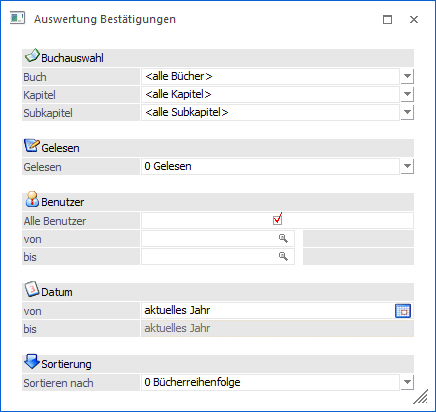

Unter
1 WinLine INFO
1 PDMS
1 Bestätigungsauswertung
kann ausgewertet werden, wer welche Bücher, Kapitel und Subkapitel bereits als gelesen markiert hat bzw. wer diese noch nicht als gelesen bestätigt hat.
Dieser Menüpunkt ist für Administratoren und DSGVO Administratoren in der WinLine verfügbar. Für Benutzer die diese Berechtigung nicht zugeordnet haben, ist der Menüpunkt ausgegraut.

Ø Buchauswahl
Im Bereich Buchauswahl kann ausgewählt werden, welches Buch ausgewertet werden soll. Mittels der Auswahl <alle Bücher> werden alle vorhandenen Bücher für die Auswertung herangezogen.
Ø Gelesen
Unter Gelesen kann ausgewählt werden, ob man auswerten möchte, wer bereits eine Lesebestätigung erteilt hat, dann ist die Option "0 Gelesen" zu wählen, oder ob man jene auswerten möchte, die die Lesebestätigung noch nicht erteilt haben, dann ist die Option "1 Nicht gelesen" auszuwählen.
Ø Benutzer
Unter Benutzer kann auf bestimmte Benutzer eingeschränkt werden, wenn die Checkbox "Alle Benutzer" deaktiviert wurde.
Ø Datum
Die Datumsbeschränkung bezieht sich auf das "gelesen" Datum und kann als Selektionskriterium herangezogen werden, wenn die Auswertung mit der Auswahl "0 Gelesen" ausgegeben wird.
Ø Sortierung
Die Sortierung der Ergebnisse am Ausdruck kann nach folgenden Kriterien erfolgen:
ü Buchreihenfolge
ü Benutzer
ü Datum (nur bei der Auswahl "0 Gelesen")